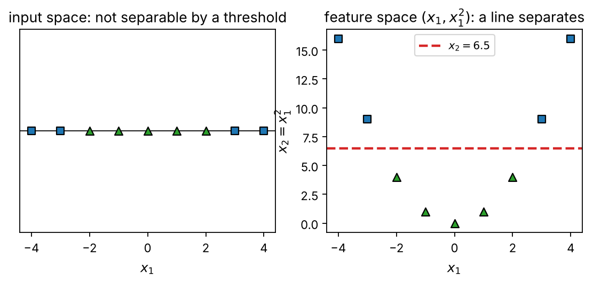
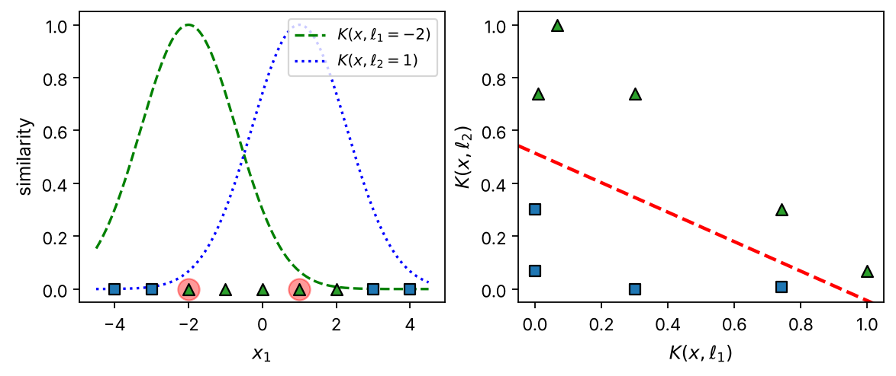
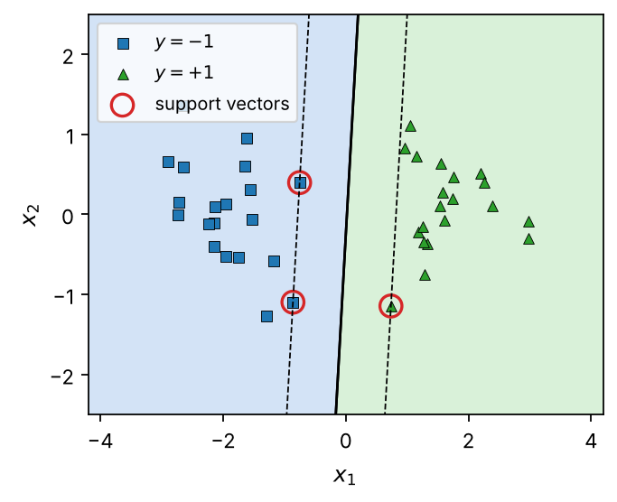
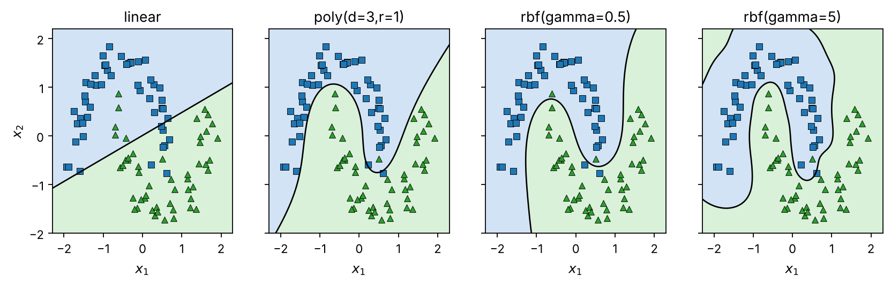
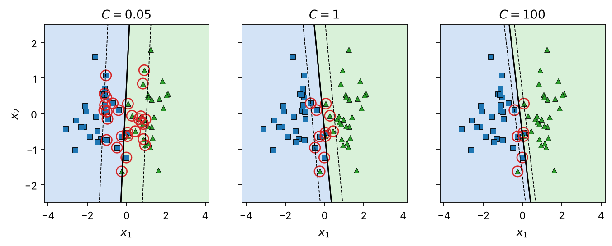
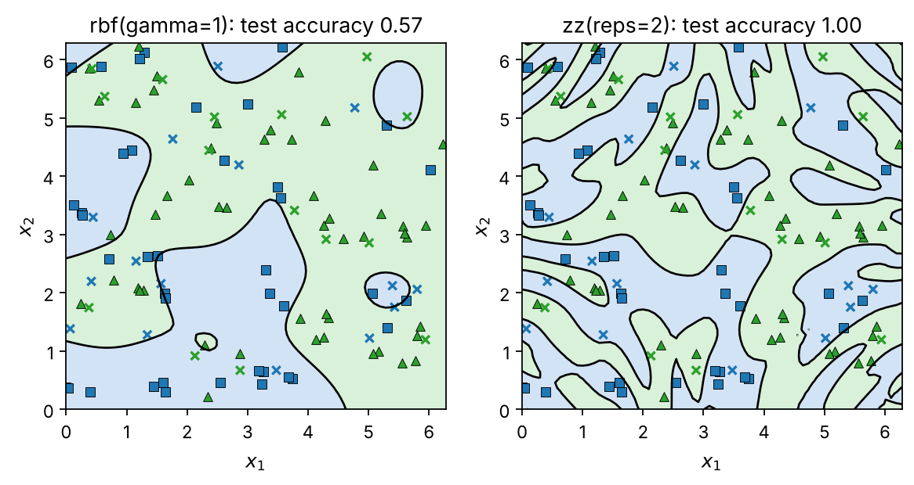
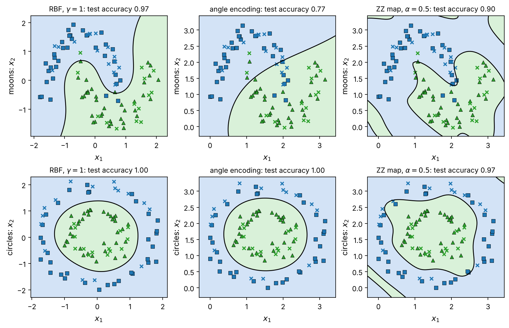
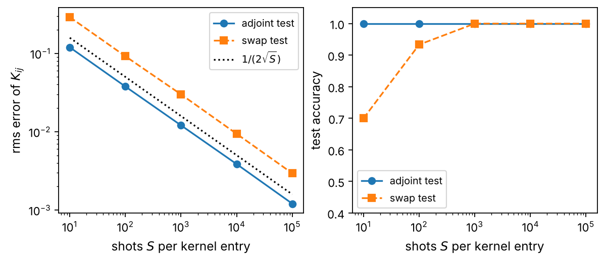
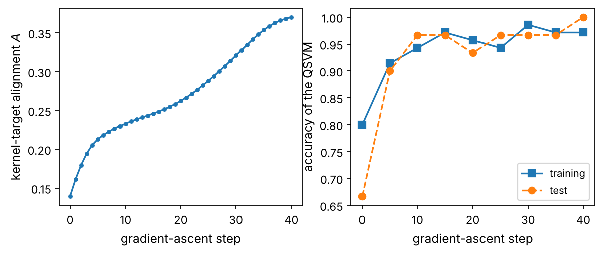

Chapter 2: Quantum Support Vector Machines#
The support-vector machine looks at its data only through a kernel, and a quantum computer can supply one as the overlap of two encoded states. The chapter first derives the classical machine from the margin: the primal and dual problems, the Karush–Kuhn–Tucker conditions and the support vectors, the soft margin, the kernel trick and Mercer’s theorem, and the sequential minimal optimization algorithm that solves the dual in a few lines of NumPy. It then defines quantum feature maps and the fidelity kernel, works out the angle, amplitude and entangling ZZ maps, shows how the kernel is estimated by the adjoint and SWAP tests with a finite number of shots, and assembles the quantum support-vector machine. The machine is run beside its classical counterpart on the two moons, two circles, XOR and Iris data, where it offers no advantage, and on a data set labeled by the ZZ map itself, where it is exact and the Gaussian kernel fails; the effects of shot noise and of the kernel bandwidth are measured, the feature map is trained by kernel-target alignment with parameter-shift gradients, and the chapter closes with the complexity of the near-term and fault-tolerant machines and with the observation that every hybrid quantum model is a kernel method.
# Put every BookPrograms/chapter*/ and BookPrograms/common/ on sys.path
import sys, pathlib
root = pathlib.Path.cwd().resolve()
while not (root / 'BookPrograms').is_dir() and root.parent != root:
root = root.parent
sys.path[:0] = [str(p) for p in (root / 'BookPrograms').iterdir() if p.is_dir()]
import numpy as np
Introduction#
The support-vector machine (SVM) is the natural first model for a book on quantum machine learning, for a reason that will take the whole chapter to appreciate and can be stated in one sentence: it never looks at the data except through a similarity \(K(\vec{x},\vec{x}')\) between pairs of samples, and a quantum computer can supply such a similarity as the overlap of two encoded states. Everything else, the notion of a margin, the convex optimization problem that finds it, the sparsity of the solution in terms of support vectors, stays exactly as Boser, Guyon, Vapnik and Cortes left it [Boser1992,CortesVapnik1995]. The quantum support-vector machine (QSVM) is therefore not a new algorithm but a new kernel, and the questions it raises, whether the kernel can be estimated accurately enough, whether it fits the data better than a Gaussian, whether it could be computed classically after all, are questions about that kernel. The quantum side of the chapter needs only the fundamentals of the companion volume [QCbook]: the overlap of two states, the measurement of a register in the computational basis, and the density matrix of a prepared state (its chapter on the fundamentals of quantum computation), together with its chapter on mapping Hamiltonians to qubits for the Pauli-string gates of the feature maps; the reader who has those in hand can read this chapter without any other preparation.
The chapter is in two halves. The first, Sections Hyperplanes and the margin
to Solving the dual problem, derives the classical machine from scratch: the
hyperplane and the margin, the Lagrangian and its dual, the
Karush–Kuhn–Tucker conditions that single out the support vectors,
the soft margin that tolerates overlapping classes, the kernel trick,
Mercer’s theorem, and the sequential minimal optimization algorithm
that solves the dual problem in a few dozen lines of NumPy; the
derivation is the one of the chapter on support-vector machines of
the author’s machine-learning text [MLbook], which also treats
the regression and multiclass versions not needed here. Readers who
know this material can go directly to Section Quantum feature maps and quantum kernels,
but should at least note the notation of Eqs. (2.10)
and (2.13), which is used throughout. The second half
replaces the kernel by a quantum one: Section Quantum feature maps and quantum kernels
defines quantum feature maps and the fidelity kernel and works out the
angle, amplitude and entangling maps of Havlíček et al.
[Havlicek2019]; Section Estimating the kernel on a quantum computer shows how the
kernel is measured, with the adjoint test and the SWAP test, and what
a finite number of shots does to it; Section The quantum support-vector machine assembles
the machine and runs it on four data sets, including one that was
constructed so that the quantum kernel separates it and classical
kernels do not; Section Training the feature map trains the feature map
itself by kernel-target alignment; and Section Perspectives
weighs the result against the complexity of the classical machine and
the fault-tolerant proposal of Rebentrost, Mohseni and Lloyd
[Rebentrost2014]. The programs are in
BookPrograms/chapter2/: a Kernel hierarchy, an
SVM class with its own solver, the feature maps and a
QuantumKernel that estimates overlaps with or without shot
noise, a QSVM class, and a KernelAlignment class.
Every number quoted below is printed by one of them.
Hyperplanes and the margin#
We have \(N\) training samples \(\vec{x}_i\in\mathbb{R}^p\) with \(p\) features each, and a label \(y_i\in\{-1,+1\}\) for each of them. A hyperplane in \(\mathbb{R}^p\) is an affine subspace of dimension \(p-1\), a line in the plane, a plane in space, and it is the set of points satisfying
for a vector \(\vec{w}\) normal to the plane and an intercept \(b\). In two dimensions this is \(b+w_1x_1+w_2x_2=0\). Two points \(\vec{x}_1\), \(\vec{x}_2\) on the plane satisfy \(\vec{w}^{T}(\vec{x}_1-\vec{x}_2)=0\), which is what “normal” means, and the signed distance of an arbitrary point \(\vec{x}\) from the plane is
positive on the side \(\vec{w}\) points to and negative on the other. A hyperplane therefore defines a classifier, \(\hat{y}(\vec{x})=\mathrm{sign}\,f(\vec{x})\), and the hyperplane classifies the training set correctly if
If such a plane exists the classes are linearly separable.
A first attempt. The most direct way of finding \(\vec{w}\) and \(b\) is to penalize the misclassified points. With \(M\) the set of indices violating Eq. (2.3) one minimizes
whose derivatives are \(\partial C/\partial b=-\sum_{i\in M}y_i\) and \(\partial C/\partial\vec{w}=-\sum_{i\in M}y_i\vec{x}_i\), and updates \(b\leftarrow b-\eta\,\partial C/\partial b\), \(\vec{w}\leftarrow\vec{w}-\eta\,\partial C/\partial\vec{w}\) with a learning rate \(\eta\) take the familiar form of the perceptron rule and of gradient descent in logistic regression. The approach is easy to code and has two defects. When the classes are separable there are infinitely many separating planes, Eq. (2.4) is zero on all of them, and which one the iteration stops at depends on the starting point and the order of the data; and when the classes are not separable the iteration need not converge at all. Both defects are cured by asking for a particular plane: the one farthest from the data.
The margin. Suppose the classes are separable. For any separating plane the smallest signed distance of a training point from it, \(\min_i y_i\delta(\vec{x}_i)\), is positive; it is called the margin \(M\) of the plane, and we want the plane with the largest margin. That is the problem
The constraint is unchanged if \(\vec{w}\) and \(b\) are multiplied by the same positive constant, so we may fix the scale by \(\Vert\vec{w}\Vert=1/M\). Maximizing \(M\) is then minimizing \(\Vert\vec{w}\Vert\), or more conveniently \(\frac12\vec{w}^{T}\vec{w}\), and the problem becomes
This is the primal form of the hard-margin support-vector machine: a quadratic objective with \(N\) linear inequality constraints, a convex problem with a unique solution. The two planes \(\vec{w}^{T}\vec{x}+b=\pm1\) are the margin boundaries, at distance \(1/\Vert\vec{w}\Vert=M\) on either side of the decision plane, and the training points that lie on them will turn out to be the only ones that matter.
Lagrange multipliers and the dual problem#
A reminder on constrained extrema. A function \(f(x,y,z)\) has an extremum where \(df=f_xdx+f_ydy+f_zdz=0\), and if the three variables are independent this requires \(f_x=f_y=f_z=0\). If the variables are tied by a constraint \(\phi(x,y,z)=0\) they are no longer independent: only two of the differentials, say \(dx\) and \(dy\), can be chosen freely, and \(dz\) is fixed by \(d\phi=\phi_xdx+\phi_ydy+\phi_zdz=0\). One could eliminate \(z\) and work with two variables, but it is usually more convenient to add a multiple \(\lambda\,d\phi\) of the constraint to \(df\),
to choose \(\lambda\) so that the coefficient of the dependent differential vanishes, \(f_z+\lambda\phi_z=0\), and to note that the two remaining differentials are arbitrary, so that their coefficients must vanish too. The extremum therefore satisfies \(\partial f/\partial x_i+\lambda\,\partial\phi/\partial x_i=0\) for every variable, together with \(\phi=0\): four equations for \(x,y,z,\lambda\). With several constraints \(\phi_k=0\) one multiplier \(\lambda_k\) per constraint appears, \(\partial f/\partial x_i+\sum_k\lambda_k\,\partial\phi_k/\partial x_i=0\). The multipliers are Lagrange’s “undetermined” multipliers; they are usually not wanted, but in the problem at hand they will be the quantities of interest. For inequality constraints \(\phi_k\ge0\) the same construction holds with the extra conditions that \(\lambda_k\ge0\) and that \(\lambda_k\phi_k=0\) at the solution: a constraint that is not active (\(\phi_k>0\)) has multiplier zero, and a constraint with nonzero multiplier is active (\(\phi_k=0\)). These are the Karush–Kuhn–Tucker (KKT) conditions, and Boyd and Vandenberghe [Boyd2004] is the reference for everything we use about them.
The Lagrangian of the margin problem. Applied to Eq. (2.6), with one multiplier \(\lambda_i\ge0\) per sample, the construction gives the Lagrangian
to be minimized over \(\vec{w}\) and \(b\) and maximized over the multipliers. The derivatives with respect to \(b\) and \(\vec{w}\) give
The second equation is the key structural fact about the machine: the normal vector is a linear combination of the training samples. Inserting both into Eq. (2.7), the terms linear in \(b\) vanish by Eq. (2.8), and the two quadratic terms combine into
to be maximized subject to \(\lambda_i\ge0\) and \(\sum_i\lambda_iy_i=0\). This is the dual problem. It has as many variables as there are samples rather than features, it is again a convex quadratic program, and, decisively for what follows, the samples enter it only through their inner products \(\vec{x}_i^{T}\vec{x}_j\).
Support vectors. The KKT conditions of the problem read
Either \(\lambda_i>0\), and then \(y_i(\vec{w}^{T}\vec{x}_i+b)=1\): the sample lies exactly on the margin boundary. Or \(y_i(\vec{w}^{T}\vec{x}_i+b)>1\), the sample is strictly inside its half space, and then \(\lambda_i=0\). The samples with \(\lambda_i>0\) are the support vectors; they are the points closest to the decision plane, they alone define it through Eq. (2.9), and removing any other point from the training set changes nothing. From any support vector the intercept follows, \(b=y_i-\vec{w}^{T}\vec{x}_i\) (using \(1/y_i=y_i\)), and in practice one averages over the set \(\mathcal{S}\) of the \(N_s\) support vectors to reduce rounding errors,
The classifier for a new sample is then
with only the support vectors contributing to the sum.
The matrix form. With the vectors \(\vec{\lambda}=(\lambda_1,\dots,\lambda_N)\) and \(\vec{y}=(y_1,\dots,y_N)\) and the matrix \(P_{ij}=y_iy_j\,\vec{x}_i^{T}\vec{x}_j\), maximizing Eq. (2.10) is minimizing
where \(\matr{P}\), being the Gram matrix of the vectors \(y_i\vec{x}_i\),
is positive semidefinite. We return to how this is solved in
Section Solving the dual problem; for the moment we let the program
svm.py do it.
A first example. Figure 2.1 shows the hard-margin machine trained on two Gaussian clouds of twenty points each. The solver finds \(\vec{w}=(1.2494,-0.0909)\), \(b=-0.0248\) and a margin \(1/\Vert\vec{w}\Vert=0.7983\), with three support vectors, two of one class and one of the other, which sit exactly on the dashed margin lines; every other point has \(\lambda_i=0\) and \(y_if(\vec{x}_i)>1\), as the program checks. Fifty-seven two-variable updates of the algorithm of Section Solving the dual problem were needed.

Figure 2.1: The hard-margin support-vector machine on two separable Gaussian clouds. The solid line is the decision plane \(\vec{w}^{T}\vec{x}+b=0\), the dashed lines are the margin boundaries \(\vec{w}^{T}\vec{x}+b=\pm1\), and the circled points are the three support vectors, the only samples with \(\lambda_i>0\). From svm.py.
The soft margin#
When the classes overlap, no plane satisfies all the constraints of Eq. (2.6) and the dual problem is unbounded. The remedy of Cortes and Vapnik [CortesVapnik1995] is to allow each sample to violate its margin by a slack \(\xi_i\ge0\) and to pay for the total violation:
A sample with \(0<\xi_i<1\) is on the correct side of the decision plane but inside the margin, a sample with \(\xi_i>1\) is misclassified, and \(\sum_i\xi_i\) bounds the number of misclassifications. The constant \(C>0\) sets the price of a violation: a large \(C\) approaches the hard margin, a small \(C\) accepts violations in exchange for a wider margin, and \(C\) is the regularization parameter of the method, to be chosen by cross-validation. The Lagrangian acquires a second set of multipliers \(\gamma_i\ge0\) for the constraints \(\xi_i\ge0\),
and the stationarity conditions are Eqs. (2.8) and (2.9) as before, plus one from \(\partial\mathcal{L}/\partial\xi_i=0\),
Inserting them, the slacks and the \(\gamma_i\) drop out, and the dual is the same function \(\mathcal{L}_D(\vec{\lambda})\) of Eq. (2.10), now maximized in the box \(0\le\lambda_i\le C\) with \(\sum_i\lambda_iy_i=0\). The KKT conditions become
and they sort the samples into three groups: \(\lambda_i=0\), correctly
classified outside the margin; \(0<\lambda_i<C\), on the margin boundary
with \(\xi_i=0\); and \(\lambda_i=C\), inside the margin or misclassified
with \(\xi_i>0\). The intercept of Eq. (2.12) must now be
averaged over the second group only, which is what svm.py
does. Figure 2.2 shows the effect of \(C\) on two
overlapping clouds: for \(C=0.05\) the margin is \(1.09\), 28 of the 60
points are support vectors and 26 of them violate the margin; for
\(C=1\) the margin is \(0.56\) with 11 support vectors and 9 violations;
for \(C=100\) it is \(0.25\) with 7 and 6. The training accuracy is \(0.95\),
\(0.97\) and \(0.97\): a narrower margin fits the training set no better,
and the wide-margin solution is the one that will generalize.

Figure 2.2: The soft-margin machine on two overlapping clouds for three values of the regularization constant \(C\). The circled points are the support vectors, \(\lambda_i>0\); as \(C\) grows the margin narrows and the solution is carried by fewer points. From svm.py.
Kernels#
Non-linear feature maps. Everything so far finds a linear boundary in the space of the features. Most data are not linearly separable there, and the classical way out, in regression as in classification, is to map the features into a larger space, \(\vec{x}\mapsto\vec{z}=\vec{\phi}(\vec{x})\), with polynomials, splines or any other basis functions, and to fit the linear model in that space. The top row of Fig. 2.3 shows the simplest case: nine points on a line with the middle five in one class, which no threshold separates, become separable by a line after the map \(x\mapsto(x,x^2)\). In two dimensions the quadratic map is
and the dual problem of Eq. (2.10) in the new space is the same problem with \(\vec{x}_i^{T}\vec{x}_j\) replaced by \(\vec{z}_i^{T}\vec{z}_j=\vec{\phi}(\vec{x}_i)^{T}\vec{\phi}(\vec{x}_j)\).
The kernel trick. Multiply out the inner product of Eq. (2.19):
The inner product in the three-dimensional feature space is a function of the inner product in the original space, and can be evaluated without ever forming \(\vec{\phi}\). This is the kernel trick [Boser1992]: define the kernel \(K(\vec{x},\vec{x}')=\vec{\phi}(\vec{x})^{T}\vec{\phi}(\vec{x}')\), and write the dual problem and the classifier in terms of it,
Neither the training nor the prediction ever touches \(\vec{\phi}\). The feature space can therefore be as large as one likes, including infinite-dimensional, as long as the kernel is cheap, and this is the observation on which the quantum machine rests: the feature space will be the Hilbert space of \(n\) qubits, of dimension \(2^n\), and the kernel will be measured.
Common kernels. Apart from the linear kernel \(K=\vec{x}^{T}\vec{x}'\) the standard choices are
and the sigmoid kernel \(K=\tanh(\gamma\,\vec{x}^{T}\vec{x}'+r)\). The RBF kernel is the most used; its feature space is infinite-dimensional, its parameter \(\gamma\) sets the width \(1/\sqrt{\gamma}\) over which two samples are considered similar, and the bottom row of Fig. 2.3 gives the picture behind it: a sample is described by its similarity to a few landmarks, and in those coordinates the nine points of the left panel become linearly separable again.

Figure 2.3: Top: nine samples on a line, not separable by a threshold (left), become linearly separable after the map \(x\mapsto(x,x^2)\) (right). Bottom: the same samples described by their Gaussian similarity \(\exp(-\gamma(x-\ell)^2)\) to two landmarks \(\ell_1=-2\), \(\ell_2=1\) (left), and in the coordinates \((K(x,\ell_1),K(x,\ell_2))\), where a line separates them (right). From kernels.py.
Mercer’s theorem. Which functions \(K\) are inner products in some feature space? Mercer’s theorem [Mercer1909] answers: a symmetric, continuous \(K\) is the inner product \(\vec{\phi}(\vec{x})^{T}\vec{\phi}(\vec{x}')\) of some map \(\vec{\phi}\), in general into an infinite-dimensional space, if and only if for every finite set of points the Gram matrix
One may then use \(K\) without knowing \(\vec{\phi}\), and the dual
problem, whose matrix \(P_{ij}=y_iy_jK_{ij}\) inherits the positive
semidefiniteness, stays convex. The program kernels.py checks
the condition numerically on the hundred points of the two-moons data
below: the linear, polynomial and RBF kernels pass, and the sigmoid
kernel fails for both parameter settings tried, with negative
eigenvalues in its Gram matrix. The sigmoid kernel is nevertheless used
in practice; the quantum kernels of Section Quantum feature maps and quantum kernels
will turn out to satisfy Mercer’s condition automatically, and the
estimated ones of Section Estimating the kernel on a quantum computer to violate it.
The two moons. Figure 2.4 applies four kernels to the standard “two moons” data, two interleaved half circles with Gaussian noise, with \(C=5\) and the features standardized to zero mean and unit variance. The linear kernel reaches a training accuracy of \(0.88\) with 34 support vectors; the cubic polynomial \(0.98\) with 12; the RBF kernel \(0.96\) with 20 for \(\gamma=0.5\) and \(0.98\) with 43 for \(\gamma=5\). The last panel shows what a too-narrow kernel does: the boundary wraps around individual points, nearly half the data become support vectors, and the model has begun to memorize the noise.

Figure 2.4: The two-moons data with a linear, a cubic polynomial and two Gaussian kernels, \(C=5\), features standardized. Shading shows the predicted class and the black curve the decision boundary. From svm.py.
Solving the dual problem#
Quadratic programming. The dual of Eq. (2.21) is an instance of the standard quadratic program
with \(P_{ij}=y_iy_jK(\vec{x}_i,\vec{x}_j)\), \(\vec{q}=-\vec{1}\), the
equality constraint \(\matr{A}=\vec{y}^{T}\), \(\vec{f}=0\), and the box
\(0\le\lambda_i\le C\) written as the \(2N\) inequalities \(-\lambda_i\le0\)
and \(\lambda_i\le C\), which fill the rows of \(\matr{G}\) and \(\vec{h}\).
Since \(\matr{P}\) is positive semidefinite the problem is convex, and
any of the interior-point solvers of convex optimization
[Boyd2004] solves it; the method SVM.qp_matrices of
svm.py builds the six objects, and solve_with_cvxopt
hands them to the CVXOPT library when it is installed, for comparison
with the solver described next. Gradient methods on
Eq. (2.21) also work but converge slowly, because the
equality constraint couples all the multipliers.
Sequential minimal optimization. The solver we use throughout is Platt’s sequential minimal optimization (SMO) [Platt1998], which needs nothing beyond NumPy and exposes the structure of the problem. The idea is that the constraint \(\sum_i\lambda_iy_i=0\) forbids changing one multiplier alone, but allows changing two, \(\lambda_i\) and \(\lambda_j\), along the line \(\lambda_iy_i+\lambda_jy_j=\text{const}\), and that along that line the objective is a parabola whose maximum is known in closed form. With the errors \(E_i=f(\vec{x}_i)-y_i\) of the current model and the curvature \(\eta=K_{ii}+K_{jj}-2K_{ij}\ge0\), the unconstrained optimum along the line is
which is then clipped to the segment \([L,H]\) of the line that stays
inside the box \(0\le\lambda\le C\) (\(L=\max(0,\lambda_j-\lambda_i)\),
\(H=\min(C,C+\lambda_j-\lambda_i)\) when \(y_i\ne y_j\), and
\(L=\max(0,\lambda_i+\lambda_j-C)\), \(H=\min(C,\lambda_i+\lambda_j)\) when
\(y_i=y_j\)), and \(\lambda_i\) is moved by \(y_iy_j\) times the opposite
amount. The intercept is updated so that the KKT condition of the
moved multiplier holds, and the pair is chosen by scanning the samples
for a KKT violation and pairing the violator with the sample of the
largest \(\vert E_i-E_j\vert\). The core of the update in
svm.py, with Q the matrix \(y_iy_jK_{ij}\), is
import numpy as np
from svm import SVM
# the two-multiplier step of SMO, Eq. (2-smo), as svm.py implements it
def take_step(K, y, lam, b, i, j, C):
E = (y[:, None] * y[None, :] * K) @ lam * y - y + b # E_i = f(x_i) - y_i
eta = K[i, i] + K[j, j] - 2 * K[i, j]
if y[i] != y[j]:
L, H = max(0.0, lam[j] - lam[i]), min(C, C + lam[j] - lam[i])
else:
L, H = max(0.0, lam[i] + lam[j] - C), min(C, lam[i] + lam[j])
lam_j = np.clip(lam[j] + y[j] * (E[i] - E[j]) / eta, L, H)
lam_i = lam[i] + y[i] * y[j] * (lam[j] - lam_j)
return lam_i, lam_j
Each step is \(\bigO(N)\) once the Gram matrix is stored, the number of
steps is typically a small multiple of \(N\) (57 for the three-support-vector
problem of Fig. 2.1, a few hundred for the moons),
and the iteration stops when no sample violates its KKT condition
beyond a tolerance. The class SVM accepts any kernel object of
kernels.py or, through its argument K, a precomputed
Gram matrix; the latter is how the quantum kernel will enter. On the
RBF problem of Fig. 2.4 its dual objective agrees with
that of the LIBSVM solver inside scikit-learn to six digits
(svm.py prints both when scikit-learn is installed).
Quantum feature maps and quantum kernels#
The definition. A classical feature map sends a sample to a vector in a large space. A quantum feature map sends it to the state of a register of \(n\) qubits, prepared from \(\vert 0\rangle^{\otimes n}\) by a circuit whose gates depend on the sample,
and the quantum kernel is the overlap of two such states,
The squared modulus rather than the amplitude itself is used because the amplitude \(\langle\phi(\vec{x})\vert\phi(\vec{x}')\rangle\) is complex and not directly measurable, while its squared modulus is a probability, the fidelity of the two states, and Section Estimating the kernel on a quantum computer shows how it is measured. Equation (2.29) is the kernel of Havlíček et al. [Havlicek2019] and of Schuld and Killoran [SchuldKilloran2019], who introduced the view of an encoding circuit as a feature map, and it is a Mercer kernel without any further condition: writing \(\rho(\vec{x})=\vert\phi(\vec{x})\rangle\langle\phi(\vec{x})\vert\) for the density matrix of the encoded state,
which is the Hilbert–Schmidt inner product of two vectors in the real vector space of Hermitian \(2^n\times2^n\) matrices. The feature map whose existence Mercer’s theorem guarantees is therefore known explicitly: it is \(\vec{x}\mapsto\rho(\vec{x})\), into a space of dimension \(4^n\), and the kernel matrix of any data set is positive semidefinite. Equation (2.30) also makes precise the sense in which the quantum machine works in an exponentially large feature space, and it will return in Section Perspectives as the reason why every quantum model of the type of Chapter 1 is a kernel method.
Angle encoding. The angle encoding of Chapter 1,
with one qubit per feature, gives the kernel of Eq. (1.4),
a product of one-dimensional kernels, each a smooth periodic function
of the difference of one feature. It is a stationary kernel like the
RBF, with a fixed width, and a classical computer evaluates it in
\(\bigO(p)\) operations. The same holds for \(R_x\) rotations and for the encoding
\(R_z(x_q)H\), whose kernel is again \(\prod_q\cos^2((x_q-x'_q)/2)\)
(Exercise 1.2). The program
feature_maps.py checks Eq. (2.32) for a
random pair of samples; the value it prints, \(0.7019\), agrees with the
product of cosines.
Amplitude encoding. With the sample as the amplitude vector, Eq. (1.5),
the square of the cosine of the angle between the samples, which is the quadratic polynomial kernel of Eq. (2.20) on normalized data. The compact encoding, \(\lceil\log_2p\rceil\) qubits, buys nothing here: the kernel is classical, and the state-preparation circuit is expensive.
Entangling feature maps. Neither of the two maps above can give a quantum advantage, because their kernels are evaluated classically in polynomial time; the remark of Havlíček et al. that a feature map that is easy to simulate classically makes the quantum computer unnecessary [Havlicek2019] is the starting point for everything that follows. Their proposal, the second-order Pauli-\(Z\) feature map or ZZ feature map, is
with one qubit per feature, \(r\) repetitions (two in the original work), and the functions
with the pairs \((q,q')\) running over nearest neighbors (“linear” entanglement) or over all pairs (“full”). The Hadamards put every qubit into \((\vert0\rangle+\vert1\rangle)/\sqrt2\), the single-\(Z\) terms write the features into the phases, and the \(Z_qZ_{q'}\) terms write products of features into the phases of the two-qubit states, which is where the entanglement and the non-linearity come from. All the terms in the exponent commute, being diagonal, so the exponential is a product of one-qubit phase rotations \(e^{i\phi_qZ_q}=R_z(-2\phi_q)\) and two-qubit rotations \(e^{i\phi_{qq'}Z_qZ_{q'}}\), each of which is a CNOT, an \(R_z(-2\phi_{qq'})\) on the target, and a second CNOT, Fig. 2.5. The depth is \(\bigO(rn)\) for linear and \(\bigO(rn^2)\) for full entanglement. The general form, with \(Z_qZ_{q'}\) replaced by arbitrary Pauli strings and \(\phi_{qq'}\) by other functions, is the Pauli feature map; the ZZ map is the one for which classical hardness is argued, through its relation to sampling from the output of such circuits, and the one every quantum machine-learning library implements.

Figure 2.5: One repetition of the ZZ feature map of Eq. (2.34) on two qubits. The two-qubit rotation \(e^{i\phi_{12}Z_1Z_2}\) is realized as CNOT, \(R_z(-2\phi_{12})\) on the target, CNOT. The circuit is repeated \(r\) times, and \(U^{\dagger}(\vec{x}')\) is the same circuit read backwards with the angles of \(\vec{x}'\) and their signs reversed.
The program implements the map as the class ZZFeatureMap and
checks it, on two qubits, against the matrix exponential of the
diagonal generator; the two agree up to a global phase. Its argument
alpha multiplies the features before they enter
Eq. (2.35), a bandwidth that plays the role of
\(\gamma\) in the RBF kernel and whose importance was pointed out by
Shaydulin and Wild [Shaydulin2022]: a kernel whose phases vary too
fast with the features becomes nearly diagonal, every sample is
similar only to itself, and the machine memorizes. We shall see this
happen in Table 2.1.
Where the kernel lives. It is worth pausing on what has and has not changed relative to Section Kernels. The feature space is explicit, \(\mathbb{C}^{2^n}\) or, by Eq. (2.30), the \(4^n\)-dimensional space of density matrices, and the kernel is its inner product; a classical computer could in principle construct the same feature vectors by simulating the circuit, at a cost exponential in \(n\), which is why the quantum computer is used instead. For a product map such as Eq. (2.31) the simulation costs \(\bigO(n)\) and the quantum computer is not needed; for the ZZ map with a dozen or more qubits and full entanglement no efficient simulation is known. The machine itself, Eqs. (2.21) and (2.22), is the classical one of Sections Lagrange multipliers and the dual problem–Solving the dual problem and is trained on a classical computer.
Estimating the kernel on a quantum computer#
A quantum computer does not return an overlap; it returns measurement outcomes, and the fidelity of Eq. (2.29) has to be extracted from their statistics. Two circuits do this.
The adjoint test. Prepare \(\vert\phi(\vec{x}')\rangle=U(\vec{x}')\vert0\rangle\), apply the inverse of the circuit of the other sample, \(U^{\dagger}(\vec{x})\), and measure every qubit in the computational basis (Fig. 2.6). The probability of reading all zeros is
exactly the kernel. The test uses \(n\) qubits and twice the depth of the feature map, and the inverse circuit is the feature-map circuit run backwards with the signs of all rotation angles reversed, so that nothing new has to be compiled. The estimate from \(S\) shots is the fraction \(\hat{K}=S_0/S\) of all-zero outcomes, a binomial variable with

Figure 2.6: The adjoint (inversion) test for the quantum kernel: the feature-map circuit of one sample followed by the inverse circuit of the other. The fraction of shots in which every qubit reads \(0\) estimates \(K(\vec{x},\vec{x}')\), Eq. (2.36).
The SWAP test. The older alternative [Buhrman2001] prepares both states in two registers of \(n\) qubits and uses an ancilla (Fig. 2.7): a Hadamard on the ancilla, a swap of the two registers controlled by the ancilla, a second Hadamard, and a measurement of the ancilla. Writing \(\vert a\rangle=\vert\phi(\vec{x})\rangle\) and \(\vert b\rangle=\vert\phi(\vec{x}')\rangle\), the state before the measurement is
and the probability of reading \(0\) on the ancilla is
The estimate \(\hat{K}=2\hat{P}(0)-1\) has variance
which is \((1+K)/K\) times that of the adjoint test: twice as large near \(K=1\) and without bound for small kernel values. The SWAP test needs \(2n+1\) qubits and \(n\) controlled-swap (Fredkin) gates, each of which costs several two-qubit gates on hardware; its one advantage is that it does not require the inverse circuit, so that it also works when the states come from somewhere other than a known circuit, for example from a quantum simulation. For kernels of encoded classical data the adjoint test is used.

Figure 2.7: The SWAP test: the two encoded states in two registers (each line stands for \(n\) qubits), a controlled swap of the registers, and a measurement of the ancilla, Eq. (2.38).
On the simulator.
The class QuantumKernel of feature_maps.py evaluates
Eq. (2.29) exactly from the two state vectors, which is
what a noiseless simulator can do and a quantum computer cannot, and
also builds the two test circuits on the simulator of
common/statevector.py and samples them:
import numpy as np
from feature_maps import ZZFeatureMap, QuantumKernel
rng = np.random.default_rng(1) # the pair of the program's own test
x, xp = rng.uniform(0, np.pi, 2), rng.uniform(0, np.pi, 2)
kernel = QuantumKernel(ZZFeatureMap(2, reps=1))
K = kernel([x], [xp])[0, 0] # exact fidelity
adj = kernel.adjoint_circuit(x, xp) # U(x)^dagger U(x')|0>
print(K, adj.probabilities()[0]) # P(00) = K
print(adj.sample(1000, np.random.default_rng(3)))
swap = kernel.swap_test_circuit(x, xp) # ancilla + two registers
print((1 + K) / 2, swap.marginal(0)[0]) # P(ancilla = 0)
0.15698435316510656 0.15698435316510656
{'00': 164, '01': 33, '10': 798, '11': 5}
0.5784921765825533 0.5784921765825534
For the pair of samples in the program’s own test the fidelity is
\(0.1570\), the adjoint circuit returns all zeros with that probability,
the ancilla of the SWAP circuit reads \(0\) with probability \(0.5785=(1+K)/2\),
and a thousand shots of the adjoint test give \(164\) all-zero outcomes,
an estimate \(\hat{K}=0.164\) with the standard error \(\sqrt{K(1-K)/S}=0.012\)
of Eq. (2.37). With a finite shots argument
the class returns, for every kernel entry, a binomial sample of the
exact probability; this is statistically identical to running the
circuit \(S\) times and counting, and it is how all shot-noise results
below are produced.
The cost, and a defect of estimated kernels.
Training needs the \(N(N-1)/2\) distinct off-diagonal entries of the
Gram matrix (the diagonal is \(1\)), each from its own circuit run \(S\)
times, and prediction needs \(N_s\) more entries per test sample; the
quantum part of the machine therefore costs \(\bigO(N^2S)\) circuit
executions, which for the \(N=90\) training points and \(S=10^4\) shots
of Section Kernels from a finite number of shots is \(4\times10^7\) shots, of the order of an hour
on a present-day device. The estimated matrix \(\hat{\matr{K}}\) (which the program samples
entry by entry, \(\hat{K}_{ij}\) and \(\hat{K}_{ji}\) independently) is
symmetric only on average and, more seriously, is not positive
semidefinite: the sampling errors of \(\bigO(1/\sqrt{S})\) in every
entry shift the small eigenvalues of \(\matr{K}\) below zero, and the
dual problem of Eq. (2.21) is then not concave, so
that SMO can cycle and an interior-point solver can fail. The remedy
used by qsvm.py, and by the libraries, is to replace
\(\hat{\matr{K}}\) by the nearest positive-semidefinite matrix: symmetrize,
diagonalize, and set the negative eigenvalues to zero,
Table 2.3 will show how negative the smallest eigenvalue gets.
The quantum support-vector machine#
The algorithm. Everything is now in place, and the QSVM is the following four steps [Havlicek2019,SchuldKilloran2019].
Choose a feature map \(U(\vec{x})\) and rescale the features into the range the map expects, \([0,\pi]\) for rotation angles.
Estimate the training Gram matrix \(K_{ij}=\vert\langle\phi(\vec{x}_i)\vert\phi(\vec{x}_j)\rangle\vert^2\) on the quantum computer, one circuit per pair, and project it onto the positive-semidefinite cone if it was estimated with shots.
Solve the dual problem
\[ \max_{\vec{\lambda}}\ \sum_i\lambda_i-\frac{1}{2}\sum_{i,j}\lambda_i\lambda_jy_iy_jK_{ij} \quad\text{s.t.}\quad\sum_i\lambda_iy_i=0,\ 0\le\lambda_i\le C ,\tag{2.41} \]on the classical computer, which is Eq. (2.21) with the quantum Gram matrix, and compute \(b\) from the margin support vectors by Eq. (2.12).
Classify a new sample by estimating its kernel with each support vector and evaluating
\[ \hat{y}(\vec{x})=\mathrm{sign}\left(\sum_{i\in\mathcal{S}}\lambda_iy_i\,K(\vec{x}_i,\vec{x})+b\right).\tag{2.42} \]
The class QSVM of qsvm.py is these four steps, and
is short enough to show in full (the program adds only a switch
psd that turns the projection off):
import numpy as np
from svm import SVM
from feature_maps import QuantumKernel, ZZFeatureMap
class QSVM:
"""A support-vector machine with a quantum kernel."""
def __init__(self, feature_map, C=1.0, shots=None, method="adjoint", rng=0):
self.kernel = QuantumKernel(feature_map, shots=shots, method=method, rng=rng)
self.svm = SVM(C=C)
def fit(self, X, y):
self.X_train = np.asarray(X, float)
K = self.kernel.gram(self.X_train) # the quantum part
if self.kernel.shots: # Eq. (2-psdfix)
w, V = np.linalg.eigh((K + K.T) / 2)
K = (V * np.maximum(w, 0)) @ V.T
self.svm.fit(self.X_train, y, K=K) # the classical part
return self
def decision_function(self, X):
K = self.kernel(np.asarray(X, float), self.X_train)
return self.svm.decision_function(X, K=K)
def predict(self, X):
return np.sign(self.decision_function(X))
The solver never learns that the kernel came from a quantum circuit,
and the same class runs with any FeatureMap.
Four data sets. Table 2.1 trains six machines on four two-class problems, each split \(70/30\) into training and test sets: the two moons and two circles of Fig. 2.4, the XOR problem (four Gaussian clouds at the corners of a square with diagonally opposite corners in the same class, which no linear classifier can learn), and the two overlapping species, versicolor and virginica, of Fisher’s Iris flowers [Fisher1936] described by petal length and width. The classical machines use standardized features and the quantum ones features rescaled into \([0,\pi]\); \(C=1\) throughout.
Data set |
linear |
RBF (\(\gamma=1\)) |
angle |
angle, ent. |
ZZ |
ZZ, \(\alpha=0.5\) |
|---|---|---|---|---|---|---|
two moons |
0.89/0.83 |
0.96/0.97 |
0.89/0.77 |
0.89/0.83 |
0.77/0.83 |
0.94/0.90 |
two circles |
0.67/0.37 |
1.00/1.00 |
1.00/1.00 |
0.99/1.00 |
0.80/0.73 |
0.96/0.97 |
XOR |
0.81/0.60 |
1.00/1.00 |
1.00/1.00 |
0.97/0.90 |
0.81/0.83 |
1.00/1.00 |
Iris (versicolor/virginica) |
0.96/0.90 |
0.97/0.90 |
0.96/0.90 |
0.97/0.90 |
0.83/0.70 |
0.93/0.87 |
Table 2.1: Training/test accuracy of classical and quantum kernels on
four two-class problems, \(C=1\), 70/30 split (two features, two qubits
in every case). The angle encoding is Eq. (2.31); “ent”
adds a second layer of rotations with a CNOT between them; the ZZ map
is Eq. (2.34) with \(r=2\), with and without the bandwidth
\(\alpha=0.5\). From qsvm.py.
Three things are visible in the table and in Fig. 2.8, which draws the decision regions of three of the kernels. First, the plain angle encoding does what its kernel, Eq. (2.32), says it should: it is a stationary kernel of fixed width, and it performs like the RBF kernel on the circles and the XOR data, where a width of order one is right, and worse on the moons, where the RBF kernel with its tunable \(\gamma\) wins. Second, the ZZ map with the features scaled into \([0,\pi]\) fits the training set worse than every other non-linear kernel in the table, on every data set: its phases \(\phi_{qq'}=(\pi-x_q)(\pi-x_{q'})\) vary so quickly across the data that distinct samples are nearly orthogonal in the feature space, the Gram matrix is nearly diagonal, and the machine cannot generalize, which is the bandwidth problem of Shaydulin and Wild [Shaydulin2022]. Halving the features, \(\alpha=0.5\), repairs it, and the ZZ kernel then matches the RBF kernel on the XOR data and comes close on the others. Third, and most important, nothing in the table is better than the Gaussian kernel. These are two-dimensional problems; the two-qubit feature space is four-dimensional, its density matrices span a sixteen-dimensional real space, and a classical computer evaluates all the quantum kernels of the table exactly in microseconds, as the simulator just did. There was no reason to expect an advantage and there is none.

Figure 2.8: Decision regions of the RBF kernel, the angle-encoding kernel and the ZZ kernel with bandwidth \(\alpha=0.5\) on the two moons (top) and the two circles (bottom); \(C=1\). Filled markers are training samples, crosses test samples. The classical kernel sees standardized features, the quantum ones features rescaled into \([0,\pi]\). From qsvm.py.
A data set made for the quantum kernel. Havlíček et al. demonstrated their machine on data that were constructed to be separable by their feature map [Havlicek2019], and the construction is instructive. Draw samples \(\vec{x}\) uniformly from \([0,2\pi)^2\), encode each with the ZZ map, \(\vert\phi(\vec{x})\rangle\), and label it by the sign of the expectation value of a fixed observable in that state,
with \(V\) a fixed random unitary; samples with \(\vert f(\vec{x})\vert<\Delta\) are discarded so that the classes are separated by a gap \(\Delta=0.3\). By construction the labels are a linear function of the density matrix \(\rho(\vec{x})\), hence linearly separable in the feature space of Eq. (2.30), and a support-vector machine with exactly this kernel should find a separating hyperplane; a classical kernel has no such guarantee. Table 2.2 and Fig. 2.9 show the outcome for 120 samples, 90 of them for training. The linear kernel and the angle encoding are at chance level on the test set; the RBF kernel reaches a test accuracy of \(0.57\) to \(0.63\) whatever its width, and with \(\gamma=5\) fits the training set to \(0.97\) by memorizing it, with 80 of 90 points as support vectors; the ZZ kernel with the right number of repetitions classifies training and test sets perfectly, with 27 support vectors, or 13 with a harder margin. The boundary it draws, in Fig. 2.9, is a complicated, fine-grained function of the features that no kernel of fixed width can reproduce, and that the ZZ kernel reproduces because it is the function the labels were made from.
Kernel |
Training accuracy |
Test accuracy |
Support vectors |
|---|---|---|---|
linear |
0.64 |
0.57 |
72 |
RBF, \(\gamma=0.2\) |
0.67 |
0.57 |
76 |
RBF, \(\gamma=1\) |
0.80 |
0.57 |
75 |
RBF, \(\gamma=5\) |
0.97 |
0.63 |
80 |
angle encoding |
0.66 |
0.43 |
78 |
ZZ, \(r=1\) |
0.90 |
0.97 |
46 |
ZZ, \(r=2\) |
1.00 |
1.00 |
27 |
ZZ, \(r=2\), \(C=100\) |
1.00 |
1.00 |
13 |
Table 2.2: The data set of Eq. (2.43): 120 samples,
65 with \(y=+1\), 90 for training and 30 for testing, \(C=1\) unless
stated. From qsvm.py.

Figure 2.9: Decision regions of the RBF kernel (\(\gamma=1\)) and of the ZZ kernel (\(r=2\)) on the data of Eq. (2.43), which were labeled by the ZZ map itself. Filled markers are training samples, crosses test samples. From qsvm.py.
This is the demonstration one can give today, and it must be read for what it is. It shows that a quantum kernel is a kernel like any other, with its own inductive bias [Kubler2021], and that data whose structure matches that bias are learned by it and not by others. It does not show that natural data have that structure, and the random unitary \(V\) that generated the labels is not something one meets in a flower or a material. Whether there exist practically relevant problems whose labels are, in this sense, a function of a classically intractable quantum state is the open question of the field; Liu, Arunachalam and Temme [Liu2021] constructed one from the discrete-logarithm problem, with a provable advantage, and Huang et al. [Huang2021] gave a test, computable from the two Gram matrices, of whether a given data set could profit from a given quantum kernel at all.
Kernels from a finite number of shots#
All the quantum results above used the exact fidelities. A quantum computer gives estimates, and Table 2.3 and Fig. 2.10 repeat the ZZ experiment of Table 2.2 with the training Gram matrix estimated from \(S\) shots per entry, by each of the two tests, and projected onto the positive-semidefinite cone before training. The root-mean-square error of the entries falls as \(1/\sqrt{S}\), with the prefactor of Eq. (2.37) for the adjoint test and a prefactor about \(2.4\) times larger for the SWAP test, as Eqs. (2.37) and (2.39) predict for the small kernel values that dominate this Gram matrix. The smallest eigenvalue of the raw estimate is negative at every shot count, down to \(-1.4\) (adjoint) and \(-3.6\) (SWAP) at ten shots for a matrix whose exact eigenvalues lie in \([0,N]\), which is why the projection of Eq. (2.40) is not optional. The classifier is remarkably robust: with the adjoint test ten shots per entry already give a perfect test accuracy, and with the SWAP test a thousand do. The reason is that the support-vector machine is a maximum-margin method, and a margin of \(\Delta=0.3\) in the label function tolerates a good deal of noise in the kernel; for data with overlapping classes the shot count would matter more, and Exercise 2.7 explores this.
Test |
\(S\) |
\(\max\vert\hat{K}_{ij}-K_{ij}\vert\) |
rms error |
\(\omega_{\min}\) |
Test accuracy |
|---|---|---|---|---|---|
adjoint |
10 |
0.576 |
0.119 |
\(-1.447\) |
1.00 |
adjoint |
100 |
0.167 |
0.038 |
\(-0.431\) |
1.00 |
adjoint |
1000 |
0.066 |
0.012 |
\(-0.149\) |
1.00 |
adjoint |
10000 |
0.024 |
0.004 |
\(-0.044\) |
1.00 |
adjoint |
100000 |
0.006 |
0.001 |
\(-0.014\) |
1.00 |
SWAP |
10 |
1.225 |
0.290 |
\(-3.626\) |
0.70 |
SWAP |
100 |
0.370 |
0.092 |
\(-1.125\) |
0.93 |
SWAP |
1000 |
0.126 |
0.030 |
\(-0.335\) |
1.00 |
SWAP |
10000 |
0.038 |
0.009 |
\(-0.104\) |
1.00 |
SWAP |
100000 |
0.012 |
0.003 |
\(-0.036\) |
1.00 |
Table 2.3: The ZZ kernel (\(r=2\)) of the training set of
Table 2.2 estimated from \(S\) shots per entry: the
largest and the root-mean-square error of the entries, the smallest
eigenvalue of the (symmetrized) estimate before projection, and the
test accuracy of the machine trained on the projected estimate. From
qsvm.py.

Figure 2.10: Left: root-mean-square error of the estimated kernel entries against the number of shots per entry, for the adjoint and the SWAP test, with the bound \(1/(2\sqrt{S})\) of Eq. (2.37). Right: test accuracy of the machine trained on the projected estimate. From qsvm.py.
The same with a library.
The feature map, the adjoint test and the precomputed-kernel machine
are what the quantum machine-learning libraries package. In PennyLane
[Bergholm2018] the adjoint test is written by applying the
template of the feature map and then its adjoint, and the kernel is
handed to scikit-learn’s SVC with kernel='precomputed':
try:
import pennylane as qml
from pennylane import numpy as pnp
from sklearn.svm import SVC
dev = qml.device("default.qubit", wires=2)
@qml.qnode(dev)
def adjoint_test(x1, x2):
qml.AngleEmbedding(x1, wires=[0, 1], rotation="Y")
qml.adjoint(qml.AngleEmbedding)(x2, wires=[0, 1], rotation="Y")
return qml.probs(wires=[0, 1])
kernel = lambda a, b: adjoint_test(a, b)[0] # P(00)
X_train = pnp.array([[0.1, 0.2], [1.1, 2.4], [0.0, 2.9], [3.0, 0.5]])
y_train = pnp.array([+1, +1, -1, -1])
K_train = qml.kernels.kernel_matrix(X_train, X_train, kernel)
clf = SVC(kernel="precomputed").fit(K_train, y_train)
print(clf.predict(qml.kernels.kernel_matrix(X_train, X_train, kernel)))
except ImportError:
print("PennyLane or scikit-learn not installed; the book's own QSVM does the same")
PennyLane or scikit-learn not installed; the book's own QSVM does the same
Qiskit [Qiskit2024] provides the ZZ map as ZZFeatureMap
and the whole machine as QSVC in its machine-learning module:
try:
from qiskit.circuit.library import ZZFeatureMap
from qiskit_machine_learning.kernels import FidelityQuantumKernel
from qiskit_machine_learning.algorithms import QSVC
import numpy as np
feature_map = ZZFeatureMap(feature_dimension=2, reps=2, entanglement="linear")
qkernel = FidelityQuantumKernel(feature_map=feature_map)
X_train = np.array([[0.1, 0.2], [1.1, 2.4], [0.0, 2.9], [3.0, 0.5]])
y_train = np.array([+1, +1, -1, -1])
qsvc = QSVC(quantum_kernel=qkernel, C=1.0).fit(X_train, y_train)
print(qsvc.predict(X_train))
except ImportError:
print("Qiskit machine learning not installed; the book's own QSVM does the same")
Qiskit machine learning not installed; the book's own QSVM does the same
Both snippets run when the package is installed and print a message when it is not; the results of this chapter do not depend on either.
Training the feature map#
The feature map has so far been fixed by hand, and the bandwidth
problem of Table 2.1 showed how much depends on that
choice. A feature map can instead carry parameters of its own,
\(U(\vec{x};\vec{\theta})\), and these can be trained before the
support-vector machine is, on a criterion that measures how well the
kernel suits the labels. The standard criterion is the
kernel-target alignment of Cristianini et al.
[Cristianini2001],
the cosine of the angle between the Gram matrix and the ideal kernel \(\vec{y}\vec{y}^{T}\), which is \(+1\) for two samples of the same class and \(-1\) otherwise. A kernel with \(A=1\) would be proportional to \(\vec{y}\vec{y}^{T}\) and would separate the classes with a single support vector per class. Hubregtsen et al. [Hubregtsen2022] proposed to maximize \(A\) over the parameters of a quantum embedding by gradient ascent, with the gradient evaluated on the quantum computer by the parameter-shift rule.
The gradient. Every gate of the embedding is a rotation \(e^{-ia\sigma/2}\) with \(\sigma\) a Pauli operator, and for such a gate the derivative of any expectation value with respect to its angle \(a\) is the difference of two shifted evaluations, \(\partial_a g=\tfrac12[g(a+\pi/2)-g(a-\pi/2)]\) [Mitarai2018,Schuld2019gradients]. A kernel entry \(K_{ij}=\vert\langle0\vert U^{\dagger}(\vec{x}_i;\vec{\theta})U(\vec{x}_j;\vec{\theta})\vert0\rangle\vert^2\) is an expectation value of the projector \(\vert0\rangle\langle0\vert\), but a parameter \(\theta_k\) appears twice in it, in the bra circuit and in the ket circuit, and the rule is applied to each occurrence separately:
where \(K_{ij}(\theta_k^{\pm},\theta_k)\) is the fidelity with the shift \(\pm\pi/2\) applied in the bra circuit only, and the second bracket is the transpose of the first, since \(K_{ij}(\theta,\theta')=K_{ji}(\theta',\theta)\). If the parameter multiplies a feature, as in the gate \(R_y(w_qx_q)\), the chain rule adds a factor \(x_q\) of the shifted sample. The gradient of \(A\) then follows from Eq. (2.44) by the chain rule, and costs two Gram matrices per parameter.
The embedding and the experiment.
The class TrainableEmbedding of feature_maps.py is a
data re-uploading circuit [PerezSalinas2020,Lloyd2020embeddings]:
\(r\) repetitions of a data layer \(R_y(w_qx_q)\) on every qubit followed
by a trainable layer \(R_z(\theta)R_y(\theta')\) on every qubit and a
ring of CNOTs,
with the input weights \(w\) among the trainable parameters, so that the
alignment can also learn the bandwidth. The program
kernel_alignment.py trains it on the two moons, with the
weights deliberately started at \(w=2.5\), a badly scaled embedding, and
the angles at random. The gradient of Eq. (2.45) is
first checked against finite differences (they agree to \(10^{-11}\)),
then forty steps of gradient ascent with step size one are taken, and
every five steps a QSVM is trained on the current kernel.
Figure 2.11 shows the result: the alignment rises from
\(0.14\) to \(0.37\), and the test accuracy of the machine from \(0.67\) at
the badly scaled start to \(0.97\) after ten steps and \(1.00\) at the end,
better than any fixed kernel of Table 2.1 on these
data. Interestingly, the weights do not shrink back towards one; the
alignment instead reshapes the trainable rotations so that the
large-angle data layers become useful. The procedure costs a full set
of Gram matrices per parameter and per step, so it is expensive in
circuit executions, but the circuits are the same shallow ones as
before, and the machine that is finally trained is still the convex
problem of Eq. (2.41).

Figure 2.11: Kernel-target alignment of the trainable embedding of Eq. (2.46) on the two moons during gradient ascent (left) and the training and test accuracy of the quantum support-vector machine with the kernel of the current parameters (right). From kernel_alignment.py.
Perspectives#
Complexity. A classical kernel machine on \(N\) samples spends \(\bigO(N^2)\) kernel evaluations and, with a general-purpose solver, \(\bigO(N^3)\) time on the dual problem; prediction costs \(N_s\) kernel evaluations per sample. The near-term quantum machine of this chapter spends \(\bigO(N^2S)\) circuit executions on the Gram matrix and the same \(\bigO(N^3)\) classical time on the dual. It offers no speedup at all, and makes no claim to one; what it offers is a different kernel, which may or may not suit the data. The fault-tolerant machine of Rebentrost, Mohseni and Lloyd [Rebentrost2014] is a different proposal: it replaces the inequality constraints by equalities (the least-squares SVM), so that training becomes the solution of an \((N+1)\)-dimensional linear system with the kernel matrix as its principal block, and solves that system with the HHL algorithm [HHL2009] in time \(\bigO(\log(Np))\) under the assumptions of quantum random-access memory for the data, a well-conditioned, efficiently simulable kernel matrix, and an output that is the state \(\sum_i\lambda_i\vert i\rangle\) rather than the numbers \(\lambda_i\). The companion volume treats HHL in its phase-estimation chapter, and the reader who has followed it will see that each assumption is substantive; Tang’s dequantization results [Tang2019] show that for low-rank kernel matrices and sampling access to the data a classical algorithm matches the polylogarithmic scaling, so that the exponential claim survives only under conditions that have not been met in practice.
Every quantum model is a kernel method. Return to the general model of Eq. (1.1), \(f(\vec{x};\vec{\theta})=\mathrm{Tr}[\rho(\vec{x})\,W^{\dagger}\hat{O}W]\). For fixed \(\vec{\theta}\) the operator \(M=W^{\dagger}(\vec{\theta})\hat{O}W(\vec{\theta})\) is a fixed Hermitian matrix, and \(f\) is linear in the density matrix \(\rho(\vec{x})\), the feature vector of Eq. (2.30). Every variational quantum classifier, whatever its trainable circuit, is therefore a linear model in the same feature space in which the quantum support-vector machine with kernel \(\mathrm{Tr}[\rho(\vec{x})\rho(\vec{x}')]\) is linear, and the representer theorem of kernel methods implies that the minimizer of any regularized loss over such linear models is of the form \(\sum_i\alpha_iK(\vec{x}_i,\vec{x})\). This is Schuld’s observation [Schuld2021kernel] that supervised quantum models are kernel methods: the trainable circuit \(W\) can only choose a direction \(M\) in the feature space, and the support-vector machine, which optimizes over all directions, is at least as expressive. Two qualifications matter. The two models are trained on different losses, and the variational model, restricted to a family of \(M\), may generalize better precisely because it is restricted [Jerbi2023]; and the kernel machine needs \(\bigO(N^2)\) circuits where the variational model needs \(\bigO(N)\) per epoch. Chapter 4 takes up the variational side.
Exponential concentration. The feature maps that cannot be simulated classically are, for the same reason, the ones whose kernels are hard to measure: for a map that is expressive enough to produce near-random states, all kernel values between distinct samples concentrate exponentially fast in \(n\) around a constant, \(K_{ij}\approx2^{-n}\), and the number of shots needed to distinguish them grows exponentially [Thanasilp2024]. The bandwidth problem that made the ZZ map fail in Table 2.1 is a small-\(n\) instance of this: the problem is not the circuit but the fact that the circuit is too expressive for the data. The design of feature maps that are classically hard, that match the structure of some class of data, and that keep their kernel values measurable is where the research is.
Summary#
A support-vector machine finds the maximum-margin hyperplane between two classes. Its dual problem, Eq. (2.10), involves the samples only through inner products, its solution is carried by the support vectors singled out by the KKT conditions, and the soft margin with its constant \(C\) extends it to overlapping classes. Replacing the inner product by a kernel, Eq. (2.21), moves the machine into any feature space whose inner product is computable, and Mercer’s condition says which functions qualify. A quantum feature map, Eq. (2.28), is such a space, of dimension \(2^n\), and its kernel is the fidelity of two encoded states, Eq. (2.29), which is a Mercer kernel automatically and is measured on a quantum computer by the adjoint test with variance \(K(1-K)/S\). The quantum support-vector machine is the classical machine trained on this measured Gram matrix, projected onto the positive-semidefinite cone. Product feature maps give classical kernels; entangling maps such as the ZZ map give kernels that are not efficiently simulable for enough qubits, that require a bandwidth to be chosen or learned, and that separate data whose labels were made by the same map. The feature map can be trained by kernel-target alignment with parameter-shift gradients. There is no running-time advantage in any of this, and the advantage in accuracy exists for constructed data and is open for natural data; and every quantum model of the hybrid kind, variational classifiers included, is a linear model in the space of density matrices and therefore a kernel method.
Exercises#
The margin. (a) Show that the distance between the two planes \(\vec{w}^{T}\vec{x}+b=\pm1\) is \(2/\Vert\vec{w}\Vert\). (b) Derive Eq. (2.10) from Eq. (2.7) by inserting Eqs. (2.8) and (2.9), keeping track of the factor \(\frac12\). (c) Show that at the solution the dual objective equals \(\frac12\Vert\vec{w}\Vert^2\), and check this with
svm.pyon the data of Fig. 2.1 (SVM.dual_objectiveandSVM.margin).Soft margin. (a) Derive Eq. (2.17) and show that \(\lambda_i=C\) for every sample with \(\xi_i>0\). (b) Explain why the intercept must be computed from the samples with \(0<\lambda_i<C\) only. (c) Reproduce Fig. 2.2, add \(C=10^{-3}\) and \(C=10^{4}\), and plot the margin and the number of support vectors against \(C\) on a logarithmic axis. (d) Split the data into training and test sets and find the \(C\) that maximizes the test accuracy.
Kernels. (a) Show that the polynomial kernel \((\vec{x}^{T}\vec{x}'+1)^2\) in two dimensions corresponds to a six-dimensional feature map, and write it down. (b) Show that the RBF kernel’s feature space is infinite-dimensional by expanding \(\exp(2\gamma\,\vec{x}^{T}\vec{x}')\) in a power series. (c) Prove that the sum and the product of two Mercer kernels are Mercer kernels, and that \(\vert\langle\phi(\vec{x})\vert\phi(\vec{x}')\rangle\vert^2\) is one for any feature map, using Eq. (2.30). (d) Find a set of three points on which the sigmoid kernel \(\tanh(\vec{x}^{T}\vec{x}'-1)\) has a Gram matrix with a negative eigenvalue.
SMO. (a) Show that the dual objective restricted to the line \(\lambda_iy_i+\lambda_jy_j=\text{const}\) is a parabola with curvature \(-\eta\), \(\eta=K_{ii}+K_{jj}-2K_{ij}\), and that its maximum is at Eq. (2.27). (b) Show that \(\eta\ge0\) for a Mercer kernel and that \(\eta=0\) if and only if \(\vec{\phi}(\vec{x}_i)=\vec{\phi}(\vec{x}_j)\). (c) Derive the bounds \(L\) and \(H\) for the two cases \(y_i=y_j\) and \(y_i\ne y_j\). (d) Install CVXOPT, set up the matrices of Eq. (2.26) with
SVM.qp_matrices, and compare the multipliers with those of SMO on the data of Fig. 2.4.Feature maps. (a) Verify that \(e^{i\phi Z\otimes Z}\) equals CNOT\(\,(I\otimes R_z(-2\phi))\,\)CNOT exactly, with \(R_z(\theta)=e^{-i\theta Z/2}\). (b) Write out \(\vert\phi(\vec{x})\rangle\) for the ZZ map with \(r=1\) on two qubits and compute its kernel in closed form. Is it a function of \(\vec{x}-\vec{x}'\) only? (c) Compute the kernel of the entangled angle encoding (“angle, ent.” of Table 2.1) on two qubits and compare it with Eq. (2.32). (d) With
feature_maps.py, plot \(K(\vec{x},\vec{x}')\) against \(\Vert\vec{x}-\vec{x}'\Vert\) for a thousand random pairs and the ZZ map with \(\alpha=1\), \(0.5\) and \(0.2\); relate what you see to the bandwidth discussion of Section The quantum support-vector machine.Kernel estimation. (a) Derive Eqs. (2.38) and (2.39). (b) Show that the SWAP-test variance exceeds the adjoint-test variance by the factor \((1+K)/K\) and compute the factor for the mean off-diagonal kernel value of the Gram matrix of Table 2.3, available as the attribute
K_rawofQSVM. (c) Prove that Eq. (2.40) gives the nearest positive-semidefinite matrix in the Frobenius norm. (d) How many circuit executions does the whole experiment of Table 2.3 require at \(S=10^4\), training and testing included?Shots and overlapping classes. Repeat the shot-noise study of Section Kernels from a finite number of shots for the two moons with the ZZ kernel, \(\alpha=0.5\), and for the Iris data, and plot the test accuracy against \(S\). At what shot count does the accuracy reach its noiseless value, and how does that compare with Table 2.3? Try also training on the raw estimate without the projection of Eq. (2.40) (argument
psd=FalseofQSVM) and report what the solver does.Kernel-target alignment. (a) Show that \(A\le1\) with equality if and only if \(\matr{K}\propto\vec{y}\vec{y}^{T}\). (b) Derive Eq. (2.45) and the chain-rule factor for a parameter that multiplies a feature. (c) Rerun
kernel_alignment.pyfrom the weights \(w=1\) and from \(w=5\), and with the Adam optimizer in the place of plain gradient ascent. Does the alignment find the same optimum? (d) Replace the alignment by the test accuracy of the QSVM as the criterion to be maximized. Why is that a worse idea, and why can it not be done by the parameter-shift rule?Every model is a kernel method. (a) Show that \(f(\vec{x})=\mathrm{Tr}[\rho(\vec{x})M]\) is linear in \(\rho(\vec{x})\) and that the set \(\{\rho(\vec{x})\}\) spans at most a \(4^n\)-dimensional real space. (b) Show that a one-qubit variational classifier with \(\hat{O}=Z\) and any \(W(\vec{\theta})\) computes \(f(\vec{x})=\vec{n}(\vec{\theta})\cdot\vec{r}(\vec{x})\), with \(\vec{r}\) the Bloch vector of \(\rho(\vec{x})\) and \(\vec{n}\) a unit vector, and that a QSVM with the fidelity kernel can represent every such \(f\). (c) Construct the data of Eq. (2.43) with a product observable and a product unitary \(V\), and show with
qsvm.pythat the RBF kernel then learns it as well as the ZZ kernel does.
Programs for this chapter#
Every number and figure in this chapter comes from the programs in
BookPrograms/allowbreak chapter2/, which build on the shared
modules of BookPrograms/allowbreak common/
(statevector, gates, datasets,
bookplot) and are imported by the notebook
Notebooks/allowbreak chapter2/allowbreak chapter2.ipynb. All run
on numpy and matplotlib alone; CVXOPT, PennyLane,
Qiskit and scikit-learn are used only where the text says so and only
if installed.
kernels.pyTheKernelclassesLinearKernel,PolynomialKernel,RBFKernel,TanhKernelandPrecomputedKernel, Eqs. (2.23)–(2.24), the quadratic map of Eq. (2.19), a numerical Mercer check, and the two rows of Fig. 2.3. Three seconds.svm.pyThe classSVM: the dual problem of Eq. (2.21) solved by sequential minimal optimization, Eq. (2.27), for any kernel or a precomputed Gram matrix; the intercept of Eq. (2.12), the decision function of Eq. (2.22), the matrices of Eq. (2.26) and an optional CVXOPT solution. As a script it produces Figs. 2.1, 2.2 and 2.4 and the numbers quoted with them. Ten seconds.feature_maps.pyThe feature mapsAngleEncoding,ZZFeatureMap,AmplitudeEncodingandTrainableEmbedding, Eqs. (2.31), (2.34), (2.33) and (2.46), and the classQuantumKernelwith exact fidelities, shot-sampled estimates by the adjoint or the SWAP test, and the two test circuits on the simulator. As a script it checks the kernels of Eqs. (2.32) and (2.33), the ZZ map against its matrix exponential, and Eqs. (2.36) and (2.38). One second.qsvm.pyThe classQSVMwith the projection of Eq. (2.40), the data set of Eq. (2.43), Tables 2.1, 2.2 and 2.3, and Figs. 2.8, 2.9 and 2.10. Half a minute.kernel_alignment.pyThe classKernelAlignment: the alignment of Eq. (2.44), its parameter-shift gradient, Eq. (2.45), checked against finite differences, and gradient ascent; Fig. 2.11 and the numbers of Section Training the feature map. Forty seconds.
Running the programs of this chapter#
Each cell below runs one of the programs listed above as a script and shows the figures it writes to BookFigures/.
import runpy, time
from IPython.display import Image, display
t0 = time.time()
runpy.run_path(str(root / 'BookPrograms' / 'chapter2/kernels.py'), run_name='__main__')
for png in sorted((root / 'BookFigures' / 'chapter2').glob('*.png')):
if png.stat().st_mtime >= t0:
display(Image(str(png)))
(x^T x')^2 equals phi(x)^T phi(x') for phi of Eq. (2-phi2)
linear Mercer (PSD Gram matrix on the moons): True
poly(d=3,r=1) Mercer (PSD Gram matrix on the moons): True
rbf(gamma=1) Mercer (PSD Gram matrix on the moons): True
tanh(gamma=1,r=-1) Mercer (PSD Gram matrix on the moons): False
tanh(gamma=0.1,r=1) Mercer (PSD Gram matrix on the moons): False
figures kerneltrick and rbflandmarks written


import runpy, time
from IPython.display import Image, display
t0 = time.time()
runpy.run_path(str(root / 'BookPrograms' / 'chapter2/svm.py'), run_name='__main__')
for png in sorted((root / 'BookFigures' / 'chapter2').glob('*.png')):
if png.stat().st_mtime >= t0:
display(Image(str(png)))
hard margin: w = (1.2494, -0.0909), b = -0.0248, margin 1/||w|| = 0.7983, 3 support vectors, 57 SMO updates
soft margin, overlapping blobs:
C = 0.05: margin 1.092, 28 support vectors, 26 margin violations, training accuracy 0.95
C = 1.00: margin 0.561, 11 support vectors, 9 margin violations, training accuracy 0.97
C = 100.00: margin 0.254, 7 support vectors, 6 margin violations, training accuracy 0.97
two moons (standardized), C = 5:
linear training accuracy 0.88, 34 support vectors
poly(d=3,r=1) training accuracy 0.98, 12 support vectors
rbf(gamma=0.5) training accuracy 0.96, 20 support vectors
dual objective: SMO 56.300498, scikit-learn 56.300491
rbf(gamma=5) training accuracy 0.98, 43 support vectors
dual objective: SMO 28.406400, scikit-learn 28.406389
figures hardmargin, softmargin and moons written



import runpy, time
from IPython.display import Image, display
t0 = time.time()
runpy.run_path(str(root / 'BookPrograms' / 'chapter2/feature_maps.py'), run_name='__main__')
for png in sorted((root / 'BookFigures' / 'chapter2').glob('*.png')):
if png.stat().st_mtime >= t0:
display(Image(str(png)))
angle encoding: K = 0.701933 = prod_i cos^2((x_i - x'_i)/2)
amplitude encoding: K = (x.x')^2 / (|x|^2 |x'|^2)
ZZ feature map agrees with exp(i sum phi Z) H^{(x)2} up to a global phase
fidelity 0.156984: adjoint test P(00) = 0.156984, SWAP test P(anc=0) = 0.578492 = (1+F)/2
1000 shots of the adjoint test: {'00': 164, '01': 33, '10': 798, '11': 5} -> K ~ 0.164
Gram matrix of the ZZ kernel: symmetric, unit diagonal, PSD; quantum-kernel checks passed
import runpy, time
from IPython.display import Image, display
t0 = time.time()
runpy.run_path(str(root / 'BookPrograms' / 'chapter2/qsvm.py'), run_name='__main__')
for png in sorted((root / 'BookFigures' / 'chapter2').glob('*.png')):
if png.stat().st_mtime >= t0:
display(Image(str(png)))
Table 2-qsvmdata: training / test accuracy, C = 1.0, 70/30 split
data set linear rbf(gamma=1) angle(Y) angle(Y,reps=2,ent) zz(reps=2) zz(reps=2,alpha=0.5)
train/test train/test train/test train/test train/test train/test
moons 0.89/0.83 0.96/0.97 0.89/0.77 0.89/0.83 0.77/0.83 0.94/0.90
circles 0.67/0.37 1.00/1.00 1.00/1.00 0.99/1.00 0.80/0.73 0.96/0.97
xor 0.81/0.60 1.00/1.00 1.00/1.00 0.97/0.90 0.81/0.83 1.00/1.00
iris (versicolor/virginica) 0.96/0.90 0.97/0.90 0.96/0.90 0.97/0.90 0.83/0.70 0.93/0.87
Table 2-havlicek: data labelled by the ZZ map (120 points, delta = 0.3, 65 with y=+1), C = 1.0
linear train 0.64 test 0.57 72 support vectors (1.2 s)
rbf(gamma=1) train 0.80 test 0.57 75 support vectors (0.4 s)
rbf(gamma=0.2) train 0.67 test 0.57 76 support vectors (0.8 s)
rbf(gamma=5) train 0.97 test 0.63 80 support vectors (0.4 s)
angle(Y) train 0.66 test 0.43 78 support vectors (0.4 s)
zz(reps=1) train 0.90 test 0.97 46 support vectors (0.6 s)
zz(reps=2) train 1.00 test 1.00 27 support vectors (1.1 s)
zz(reps=2), C=100 train 1.00 test 1.00 13 support vectors (1.1 s)
Table 2-shots: the ZZ kernel of the Havlicek data estimated with shots
adjoint 10 shots: max|dK| 0.5755 rms 0.1194 min eig -1.447 test acc 1.00
adjoint 100 shots: max|dK| 0.1673 rms 0.0377 min eig -0.431 test acc 1.00
adjoint 1000 shots: max|dK| 0.0662 rms 0.0120 min eig -0.149 test acc 1.00
adjoint 10000 shots: max|dK| 0.0235 rms 0.0039 min eig -0.044 test acc 1.00
adjoint 100000 shots: max|dK| 0.0059 rms 0.0012 min eig -0.014 test acc 1.00
swap 10 shots: max|dK| 1.2245 rms 0.2903 min eig -3.626 test acc 0.70
swap 100 shots: max|dK| 0.3704 rms 0.0918 min eig -1.125 test acc 0.93
swap 1000 shots: max|dK| 0.1258 rms 0.0299 min eig -0.335 test acc 1.00
swap 10000 shots: max|dK| 0.0378 rms 0.0094 min eig -0.104 test acc 1.00
swap 100000 shots: max|dK| 0.0120 rms 0.0029 min eig -0.036 test acc 1.00
figures qsvmmoons, havlicek and shots written



import runpy, time
from IPython.display import Image, display
t0 = time.time()
runpy.run_path(str(root / 'BookPrograms' / 'chapter2/kernel_alignment.py'), run_name='__main__')
for png in sorted((root / 'BookFigures' / 'chapter2').glob('*.png')):
if png.stat().st_mtime >= t0:
display(Image(str(png)))
parameter-shift gradient of the alignment agrees with finite differences (max difference 9.3e-12)
step 0: alignment 0.1395 train/test accuracy 0.80/0.67
step 5: alignment 0.2127 train/test accuracy 0.91/0.90
step 10: alignment 0.2331 train/test accuracy 0.94/0.97
step 15: alignment 0.2460 train/test accuracy 0.97/0.97
step 20: alignment 0.2623 train/test accuracy 0.96/0.93
step 25: alignment 0.2882 train/test accuracy 0.94/0.97
step 30: alignment 0.3208 train/test accuracy 0.99/0.97
step 35: alignment 0.3537 train/test accuracy 0.97/0.97
step 40: alignment 0.3702 train/test accuracy 0.97/1.00
input weights after training: [2.928 1.748 3.407 2.291]
figure alignment written
